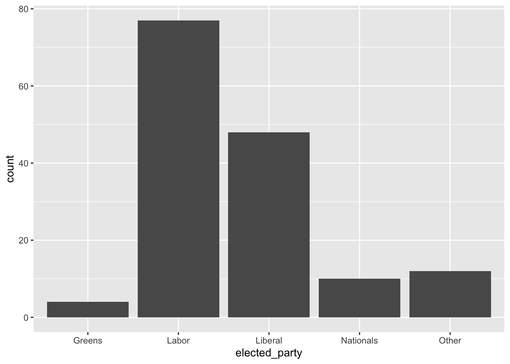
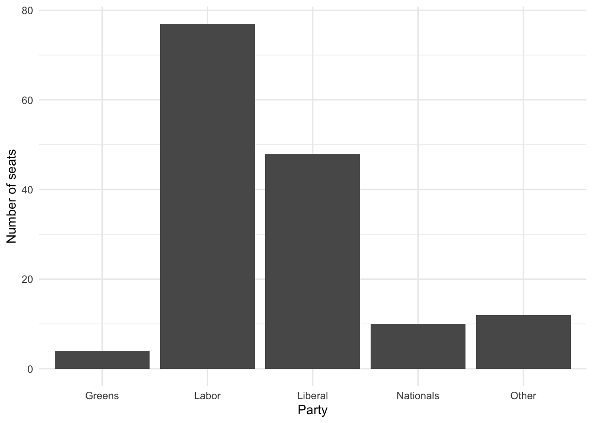
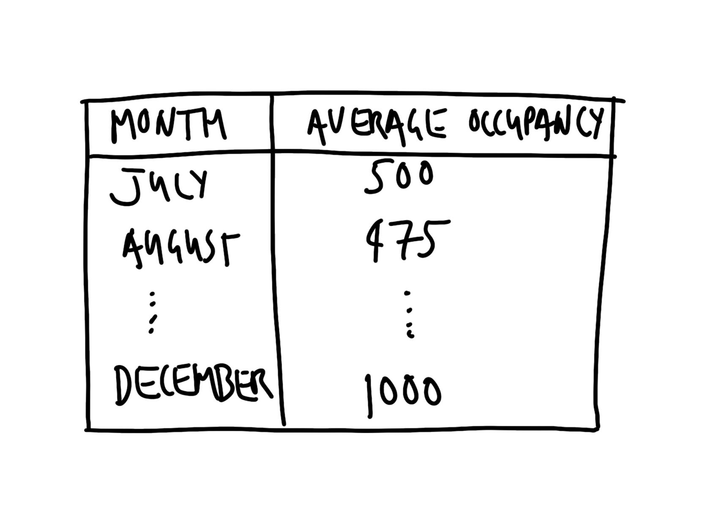

flowchart LR p[[Plan]] sim[[Simulate]] a[[Acquire]] e[[Explore/Understand]] s[[Share]] p --> sim --> a --> e --> s
Drinking from the Firehose – Data Analysis Workflow
SOCI 3040 – Quantitative Research Methods
Lecture Slides
Class Notes
1 Drinking From the Firehose
1.1 the firehose
- Australian elections
- Toronto shelters
- Neonatal mortality rates (NMR)
1.2 the firehose
Whenever you’re learning a new tool, for a long time, you’re going to suck\(\dots\) But the good news is that is typical; that’s something that happens to everyone, and it’s only temporary.
Hadley Wickham as quoted by Barrett (2021)
You will be guided thoroughly here. Hopefully by experiencing the excitement of telling stories with data, you will feel empowered to stick with it.
Rohan Alexander (2023)
2 preliminaries
setup, etc.
2.1 preliminaries
RStudio / CodeSpaces / Whatever…
2.2 preliminaries
options(repos = c(CRAN = "https://cran.rstudio.com/"))
install.packages("opendatatoronto")
install.packages("tidyverse")
install.packages("janitor")2.3 import libraries
library("janitor")
library("knitr")
library("lubridate")
library("opendatatoronto")
library("tidyverse")
library("here")3 Plan
Australian Elections
3.1 plan
3.1.1 Australian Elections
Australia is a parliamentary democracy
with 151 seats in the House of Representatives.
Major parties: Liberal and Labour
Minor parties: Nationals and Greens
Many smaller parties and independents
3.2 plan


4 Simulate
Australian Elections
4.1 simulate
library(tidyverse)
library(janitor)4.2 simulate
We’ll simulate a dataset with two variables,
Division and Party, and some values for each.
division
the name of one of the 131 Australian divisions
party
the name of one of the political parties
Liberal, Labor, National, Green, or Other
4.3 simulate
simulated_data <-
tibble(
# Use 1 through to 151 to represent each division
"Division" = 1:151,
# Randomly pick an option, with replacement, 151 times
"Party" = sample(
x = c("Liberal", "Labor", "National", "Green", "Other"),
size = 151,
replace = TRUE
)
)The <- symbol is an assignment operator in R. It assigns the value on the right to the variable name on the left. Here, we’re creating a new data object called simulated_data, which will store a table of simulated information.
tibble() is a function from the tidyverse package that creates a data frame, which is a type of table used to organize data. Unlike traditional data frames, tibble handles data more cleanly and is especially useful in data analysis.
Inside the tibble() function, we specify columns and the values we want in each. On Line 4, we create a column named “Division”. 1:151 generates a sequence of numbers from 1 to 151. This sequence will represent each unique division (or group) in our simulated dataset and helps to identify each row in the data.
Then we create another column in our tibble called Party. sample() is a function that randomly selects values from a specified set. Here, it’s used to pick a political party for each division, simulating party representation across divisions.
x defines the set of values that sample() will pick from. The c() function combines these five options — “Liberal”, “Labor”, “National”, “Green”, and “Other” — into a list of possible parties. In other words, each division will be randomly assigned one of these five party names, representing the political party that wins the division in our simulation. size = 151 specifies that sample() should generate 151 random selections, matching the number of divisions we created in the “Division” column.
When sampling, replace = TRUE allows each party name to be selected multiple times, as though we’re picking “with replacement” (i.e., once we sample a party name, it goes back into the bag so it can be drawn again). Without this, each party could only be chosen once, which wouldn’t match our goal of assigning a random party to each division.
We can print the simulated_data object to view the simulated dataset. When we run this line, R will display the table with two columns, Division and Party, where each division is assigned one of the five parties randomly.
4.4 simulate
🤘 We have our fake data!
simulated_data# A tibble: 151 × 2
Division Party
<int> <chr>
1 1 Liberal
2 2 Labor
3 3 Liberal
4 4 National
5 5 Labor
6 6 Liberal
7 7 Labor
8 8 Liberal
9 9 National
10 10 National
# ℹ 141 more rows5 Acquire
Australian Elections
5.1 acquire
The data we want is provided by the Australian Electoral Commission (AEC), which is the non-partisan agency that organizes Australian federal elections. We can download the data using this link, but we want to do it programatically, storing the results to a dataframe object called raw_elections_data.
data_url <- "https://results.aec.gov.au/27966/website/Downloads/HouseMembersElectedDownload-27966.csv"
raw_elections_data <-
read_csv(
file = data_url,
show_col_types = FALSE,
skip = 1
)5.2 acquire
We’ll save the data as a CSV file.
library(here)
write_csv(
x = raw_elections_data,
file = here("data", "australian_voting.csv")
)5.3 acquire
🤘 We have our real data!
raw_elections_data# A tibble: 151 × 8
DivisionID DivisionNm StateAb CandidateID GivenNm Surname
<dbl> <chr> <chr> <dbl> <chr> <chr>
1 179 Adelaide SA 36973 Steve GEORGA…
2 197 Aston VIC 36704 Alan TUDGE
3 198 Ballarat VIC 36409 Cather… KING
4 103 Banks NSW 37018 David COLEMAN
5 180 Barker SA 37083 Tony PASIN
6 104 Barton NSW 36820 Linda BURNEY
7 192 Bass TAS 37134 Bridge… ARCHER
8 318 Bean ACT 36231 David SMITH
9 200 Bendigo VIC 36424 Lisa CHESTE…
10 105 Bennelong NSW 36827 Jerome LAXALE
# ℹ 141 more rows
# ℹ 2 more variables: PartyNm <chr>, PartyAb <chr>5.4 acquire
head() shows the first six rows.
head(raw_elections_data)# A tibble: 6 × 8
DivisionID DivisionNm StateAb CandidateID GivenNm Surname
<dbl> <chr> <chr> <dbl> <chr> <chr>
1 179 Adelaide SA 36973 Steve GEORGA…
2 197 Aston VIC 36704 Alan TUDGE
3 198 Ballarat VIC 36409 Catheri… KING
4 103 Banks NSW 37018 David COLEMAN
5 180 Barker SA 37083 Tony PASIN
6 104 Barton NSW 36820 Linda BURNEY
# ℹ 2 more variables: PartyNm <chr>, PartyAb <chr>5.5 acquire
tail() shows the last six rows.
tail(raw_elections_data)# A tibble: 6 × 8
DivisionID DivisionNm StateAb CandidateID GivenNm Surname
<dbl> <chr> <chr> <dbl> <chr> <chr>
1 152 Wentworth NSW 37451 Allegra SPENDER
2 153 Werriwa NSW 36810 Anne Ma… STANLEY
3 150 Whitlam NSW 36811 Stephen JONES
4 178 Wide Bay QLD 37506 Llew O'BRIEN
5 234 Wills VIC 36452 Peter KHALIL
6 316 Wright QLD 37500 Scott BUCHHO…
# ℹ 2 more variables: PartyNm <chr>, PartyAb <chr>5.6 acquire
“We are trying to make it similar to the dataset that we thought we wanted in the planning stage. While it is fine to move away from the plan, this needs to be a deliberate, reasoned decision.” (Alexander 2023)
Let’s clean.
aus_voting_data <- here("data", "australian_voting.csv")
raw_elections_data <-
read_csv(
file = aus_voting_data,
show_col_types = FALSE
)5.7 acquire
clean_names() makes variables easier to type.
cleaned_elections_data <- clean_names(raw_elections_data)
Let’s look at the first 6 rows.
head(cleaned_elections_data)# A tibble: 6 × 8
division_id division_nm state_ab candidate_id given_nm
<dbl> <chr> <chr> <dbl> <chr>
1 179 Adelaide SA 36973 Steve
2 197 Aston VIC 36704 Alan
3 198 Ballarat VIC 36409 Catherine
4 103 Banks NSW 37018 David
5 180 Barker SA 37083 Tony
6 104 Barton NSW 36820 Linda
# ℹ 3 more variables: surname <chr>, party_nm <chr>,
# party_ab <chr>5.8 acquire
We are primarily interested in two variables:
division_nm (division name)party_nm (party name)
cleaned_elections_data <-
cleaned_elections_data |>
select(
division_nm,
party_nm
)5.9 acquire
head(cleaned_elections_data)# A tibble: 6 × 2
division_nm party_nm
<chr> <chr>
1 Adelaide Australian Labor Party
2 Aston Liberal
3 Ballarat Australian Labor Party
4 Banks Liberal
5 Barker Liberal
6 Barton Australian Labor PartyThis looks good, but some of the variable names are still not obvious because they are abbreviated.
5.10 acquire
names(cleaned_elections_data)[1] "division_nm" "party_nm" Let’s rename.
5.11 acquire
cleaned_elections_data <-
cleaned_elections_data |>
rename(
division = division_nm,
elected_party = party_nm
)
head(cleaned_elections_data)# A tibble: 6 × 2
division elected_party
<chr> <chr>
1 Adelaide Australian Labor Party
2 Aston Liberal
3 Ballarat Australian Labor Party
4 Banks Liberal
5 Barker Liberal
6 Barton Australian Labor Party5.12 acquire
What are the unique values in elected_party?
cleaned_elections_data$elected_party |>
unique()[1] "Australian Labor Party"
[2] "Liberal"
[3] "Liberal National Party of Queensland"
[4] "The Greens"
[5] "The Nationals"
[6] "Independent"
[7] "Katter's Australian Party (KAP)"
[8] "Centre Alliance" Cool, but let’s simplify the party names in elected_party to match what we simulated. We can do this with case_match() from dplyr.
5.13 acquire
cleaned_elections_data <-
cleaned_elections_data |>
mutate(
elected_party =
case_match(
elected_party,
"Australian Labor Party" ~ "Labor",
"Liberal National Party of Queensland" ~ "Liberal",
"Liberal" ~ "Liberal",
"The Nationals" ~ "Nationals",
"The Greens" ~ "Greens",
"Independent" ~ "Other",
"Katter's Australian Party (KAP)" ~ "Other",
"Centre Alliance" ~ "Other"
)
)5.14 acquire
head(cleaned_elections_data)# A tibble: 6 × 2
division elected_party
<chr> <chr>
1 Adelaide Labor
2 Aston Liberal
3 Ballarat Labor
4 Banks Liberal
5 Barker Liberal
6 Barton Labor Our data now matches our plan! 😎
5.15 acquire
Let’s save the cleaned data so that we can start with it data in the next stage. We’ll use a new filename to preserve the original and make it easy to identify the clean version.
aus_elections_clean_path <- here("data", "cleaned_elections_data.csv")
write_csv(
x = cleaned_elections_data,
file = aus_elections_clean_path
)6 Explore / Understand
Australian Elections
6.1 explore / understand
How do we build the graph that we planned?
6.2 explore / understand
First, we read in the cleaned dataset that we just created.
cleaned_elections_data <-
read_csv(
file = aus_elections_clean_path,
show_col_types = FALSE
)6.3 explore / understand
head(cleaned_elections_data)# A tibble: 6 × 2
division elected_party
<chr> <chr>
1 Adelaide Labor
2 Aston Liberal
3 Ballarat Labor
4 Banks Liberal
5 Barker Liberal
6 Barton Labor 😎
6.4 explore / understand
We can get a quick count with count() from dplyr.
cleaned_elections_data |>
count(elected_party)# A tibble: 5 × 2
elected_party n
<chr> <int>
1 Greens 4
2 Labor 77
3 Liberal 48
4 Nationals 10
5 Other 126.5 explore / understand
, allowing the viewer to interpret the values and relationships in the dataset visually. By mapping data to these properties, we can layer information on the same plot and enhance the viewer’s understanding of patterns, trends, and differences.
In ggplot2, aesthetics are specified within the aes() function, where each aesthetic is mapped to a data variable. For instance, x and y represent positions on the axes, while color, fill, size, and shape control other visual aspects. By carefully selecting aesthetics, we can add depth to the plot without clutter, guiding the viewer’s eye to the most important parts.
6.6 explore / understand
Let’s visualize the counts as vertical bars using geom_bar() from ggplot2.
ggplot(
cleaned_elections_data, # specify the data
aes(x = elected_party) # specify aesthetics
) + # add a layer with the + operator
geom_bar() # specify a geometric shape (bar)But it’s cleaner to use the pipe operator |>.
cleaned_elections_data |>
ggplot(aes(x = elected_party)) +
geom_bar()

6.7 explore / understand
cleaned_elections_data |>
ggplot(aes(x = elected_party)) +
geom_bar() +
theme_minimal() + # Improve the theme
labs(x = "Party", y = "Number of seats") # Improve the labels

6.8
cleaned_elections_data |>
ggplot(aes(x = elected_party)) +
geom_bar()
cleaned_elections_data |>
ggplot(aes(x = elected_party)) +
geom_bar() +
theme_minimal() +
labs(x = "Party", y = "Number of seats")

8 Toronto Shelters
Toronto has a large unhoused population (City of Toronto 2021). Freezing winters mean it is important there are enough places in shelters. In this example we will make a table of shelter usage in 2021 to compare average use in each month. Our expectation is that there is greater usage in the colder months, for instance, December, compared with warmer months, for instance, July.
9 Plan
Toronto Shelters
9.1 plan
The dataset that we are interested in would need to have the date, the shelter, and the number of beds that were occupied that night. A quick sketch of a dataset that would work is Figure 5 (a) (next slide).
We are interested in creating a table that has the monthly average number of beds occupied each night. The table would probably look something like Figure 5 (b) (next slide).
9.2 plan


10 Simulate
Toronto Shelters
10.1 simulate
The next step is to simulate some data that could resemble our dataset. Simulation provides us with an opportunity to think deeply about our data generating process. When we turn to analysis, it will provide us with a guide. Conducting analysis without first using simulation can be thought of as shooting arrows without a target—while you are certainly doing something, it is not clear whether you are doing it well.
10.2 simulate
set.seed(853)
simulated_occupancy_data <-
tibble(
date = rep(x = as.Date("2021-01-01") + c(0:364), times = 3),
# Based on Eddelbuettel: https://stackoverflow.com/a/21502386
shelter = c(
rep(x = "Shelter 1", times = 365),
rep(x = "Shelter 2", times = 365),
rep(x = "Shelter 3", times = 365)
),
number_occupied =
rpois(
n = 365 * 3,
lambda = 30
) # Draw 1,095 times from the Poisson distribution
)
simulated_occupancy_data# A tibble: 1,095 × 3
date shelter number_occupied
<date> <chr> <int>
1 2021-01-01 Shelter 1 28
2 2021-01-02 Shelter 1 29
3 2021-01-03 Shelter 1 35
4 2021-01-04 Shelter 1 25
5 2021-01-05 Shelter 1 21
6 2021-01-06 Shelter 1 30
7 2021-01-07 Shelter 1 28
8 2021-01-08 Shelter 1 31
9 2021-01-09 Shelter 1 27
10 2021-01-10 Shelter 1 27
# ℹ 1,085 more rowsIn this simulation we first create a list of all the dates in 2021. We repeat that list three times. We assume data for three shelters for every day of the year. To simulate the number of beds that are occupied each night, we draw from a Poisson distribution, assuming a mean number of 30 beds occupied per shelter, although this is just an arbitrary choice. By way of background, a Poisson distribution is often used when we have count data, and we return to it later in the course.
11 Acquire
Toronto Shelters
11.1 acquire
toronto_shelters <-
# Each package is associated with a unique id found in the "For
# Developers" tab of the relevant page from Open Data Toronto
# https://open.toronto.ca/dataset/daily-shelter-overnight-service-occupancy-capacity/
list_package_resources("21c83b32-d5a8-4106-a54f-010dbe49f6f2") |>
# Within that package, we are interested in the 2021 dataset
filter(name ==
"daily-shelter-overnight-service-occupancy-capacity-2021.csv") |>
# Having reduced the dataset to one row we can get the resource
get_resource()
write_csv(
x = toronto_shelters,
file = here("data", "toronto_shelters.csv")
)11.2 acquire
toronto_shelters <-
read_csv(
here("data", "toronto_shelters.csv"),
show_col_types = FALSE
)
head(toronto_shelters)# A tibble: 6 × 32
X_id OCCUPANCY_DATE ORGANIZATION_ID ORGANIZATION_NAME
<dbl> <chr> <dbl> <chr>
1 1 21-01-01 24 COSTI Immigrant Serv…
2 2 21-01-01 24 COSTI Immigrant Serv…
3 3 21-01-01 24 COSTI Immigrant Serv…
4 4 21-01-01 24 COSTI Immigrant Serv…
5 5 21-01-01 24 COSTI Immigrant Serv…
6 6 21-01-01 24 COSTI Immigrant Serv…
# ℹ 28 more variables: SHELTER_ID <dbl>,
# SHELTER_GROUP <chr>, LOCATION_ID <dbl>,
# LOCATION_NAME <chr>, LOCATION_ADDRESS <chr>,
# LOCATION_POSTAL_CODE <chr>, …11.3 acquire
We’ll change the names to make them easier to type using clean_names(), and select() the relevant columns.
toronto_shelters_clean <-
clean_names(toronto_shelters) |>
mutate(occupancy_date = ymd(occupancy_date)) |>
select(occupancy_date, occupied_beds)
head(toronto_shelters_clean)# A tibble: 6 × 2
occupancy_date occupied_beds
<date> <dbl>
1 2021-01-01 NA
2 2021-01-01 NA
3 2021-01-01 NA
4 2021-01-01 NA
5 2021-01-01 NA
6 2021-01-01 611.4 acquire
All that remains for this step is to save the cleaned dataset.
write_csv(
x = toronto_shelters_clean,
file = here("data", "cleaned_toronto_shelters.csv")
)- WHERE ARE THESE
NAs COMING FROM?
12 Explore/Understand
Toronto Shelters
12.1 explore / understand
toronto_shelters_clean <-
read_csv(
here("data", "cleaned_toronto_shelters.csv"),
show_col_types = FALSE
)
toronto_shelters_clean# A tibble: 50,944 × 2
occupancy_date occupied_beds
<date> <dbl>
1 2021-01-01 NA
2 2021-01-01 NA
3 2021-01-01 NA
4 2021-01-01 NA
5 2021-01-01 NA
6 2021-01-01 6
7 2021-01-01 NA
8 2021-01-01 NA
9 2021-01-01 NA
10 2021-01-01 NA
# ℹ 50,934 more rows12.2 explore / understand
toronto_shelters_clean |>
mutate(occupancy_month = month(
occupancy_date,
label = TRUE,
abbr = FALSE
)) |>
arrange(month(occupancy_date)) |>
drop_na(occupied_beds) |>
summarise(
number_occupied = mean(occupied_beds),
.by = occupancy_month
) |>
kable()| occupancy_month | number_occupied |
|---|---|
| January | 28.55708 |
| February | 27.73821 |
| March | 27.18521 |
| April | 26.31561 |
| May | 27.42596 |
| June | 28.88300 |
| July | 29.67137 |
| August | 30.83975 |
| September | 31.65405 |
| October | 32.32991 |
| November | 33.26980 |
| December | 33.52426 |
The dataset contains daily records for each shelter. We are interested in understanding average usage for each month. To do this, we need to add a month column using
month()fromlubridate. By default,month()provides the number of the month, and so we include two arguments—“label” and “abbr”—to get the full name of the month. We remove rows that do not have any data for the number of beds usingdrop_na()fromtidyr, which is part of thetidyverse. We will do this here unthinkingly because our focus is on getting started, but this is an important decision and we talk more about missing data insec-farm-dataandsec-exploratory-data-analysis. We then create a summary statistic on the basis of monthly groups, usingsummarise()fromdplyr. We usekable()fromknitrto createtbl-homelessoccupancyd.
12.3 explore / understand
toronto_shelters_clean |>
mutate(occupancy_month = month(
occupancy_date,
label = TRUE,
abbr = FALSE
)) |>
arrange(month(occupancy_date)) |>
drop_na(occupied_beds) |>
summarise(
number_occupied = mean(occupied_beds),
.by = occupancy_month
) |>
kable(
col.names = c("Month", "Average daily number of<br>occupied beds (per shelter)"),
digits = 1
)| Month | Average daily number of occupied beds (per shelter) |
|---|---|
| January | 28.6 |
| February | 27.7 |
| March | 27.2 |
| April | 26.3 |
| May | 27.4 |
| June | 28.9 |
| July | 29.7 |
| August | 30.8 |
| September | 31.7 |
| October | 32.3 |
| November | 33.3 |
| December | 33.5 |
As with before, this looks fine, and achieves what we set out to do. But we can make some tweaks to the defaults to make it look even better (tbl-homelessoccupancy). In particular we make the column names easier to read, and only show an appropriate number of decimal places.
References
Alexander, Rohan. 2023. Telling Stories with Data: With Applications in R. Chapman; Hall/CRC.
Barrett, Malcolm. 2021. Data Science as an Atomic Habit. https://malco.io/articles/2021-01-04-data-science-as-an-atomic-habit.
Bronner, Laura. 2020. “Why Statistics Don’t Capture the Full Extent of the Systemic Bias in Policing.” FiveThirtyEight, June. https://fivethirtyeight.com/features/why-statistics-dont-capture-the-full-extent-of-the-systemic-bias-in-policing/.
Cardoso, Tom. 2020. “Bias behind bars: A Globe investigation finds a prison system stacked against Black and Indigenous inmates.” The Globe and Mail, October. https://www.theglobeandmail.com/canada/article-investigation-racial-bias-in-canadian-prison-risk-assessments/.
City of Toronto. 2021. 2021 Street Needs Assessment. https://www.toronto.ca/city-government/data-research-maps/research-reports/housing-and-homelessness-research-and-reports/.
Firke, Sam. 2023. janitor: Simple Tools for Examining and Cleaning Dirty Data. https://CRAN.R-project.org/package=janitor.
Gelfand, Sharla. 2022. opendatatoronto: Access the City of Toronto Open Data Portal. https://CRAN.R-project.org/package=opendatatoronto.
Grolemund, Garrett, and Hadley Wickham. 2011. “Dates and Times Made Easy with lubridate.” Journal of Statistical Software 40 (3): 1–25. https://doi.org/10.18637/jss.v040.i03.
Hao, Karen. 2019. “This is How AI Bias Really Happens—And Why It’s So Hard To Fix.” MIT Technology Review, February. https://www.technologyreview.com/2019/02/04/137602/this-is-how-ai-bias-really-happensand-why-its-so-hard-to-fix/.
R Core Team. 2023. R: A Language and Environment for Statistical Computing. Vienna, Austria: R Foundation for Statistical Computing. https://www.R-project.org/.
Wickham, Hadley. 2017. tidyverse: Easily Install and Load the “Tidyverse”. https://CRAN.R-project.org/package=tidyverse.
Wickham, Hadley, Mara Averick, Jenny Bryan, Winston Chang, Lucy D’Agostino McGowan, Romain François, Garrett Grolemund, et al. 2019. “Welcome to the Tidyverse.” Journal of Open Source Software 4 (43): 1686. https://doi.org/10.21105/joss.01686.
Xie, Yihui. 2023. knitr: A General-Purpose Package for Dynamic Report Generation in R. https://yihui.org/knitr/.